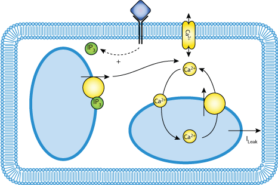

This CellML model will run in OpenCell and COR to reproduce published results. The a model is based on equations 1-3 and works to reproduce published results. The b model is based on equations 1 and 4-8 and oscillates but does not reproduce results.
Cytosolic calcium plays a crucial role as a second messenger in cellular signalling. Various cell types, including hepatocytes, display Ca2+ oscillations when stimulated by an extracellular signal. However, the biological relevance of this temporal organization remains unclear. In this paper, we investigate theoretically the effect of Ca2+ oscillations on a particular example of cell regulation: the phosphorylation/dephosphorylation cycle controlling the activation of glycogen phosphorylase in hepatocytes. By modelling periodic sinusoidal variations in the intracellular Ca2+ concentration, we show that Ca2+ oscillations reduce the threshold for the activation of the enzyme. Furthermore, as the activation of a given enzyme depends on the kinetics of its phosphorylation/dephosphorylation cycle, speciality can be encoded by the oscillation frequency. Finally, using a model for signal-induced Ca2+ oscillations based on Ca2+-induced Ca2+ release, we show that realistic Ca2+ oscillations can potentiate the response to a hormonal stimulation. These results indicate that Ca2+ oscillations in hepatocytes could contribute to increase the efficiency and speciality of cellular signalling, as shown experimentally for gene expression in lymphocytes (Dolmetsch et al., 1998).
The original paper reference is cited below:
Activation of the Liver Glycogen Phosphorylase by Ca2+ Oscillations: a Theoretical Study', DAVID GALL, ERIKA BAUS, AND GENEVIEEVE DUPONT, 2000 Journal of Theoretical Biology, 207, 445-454. PubMed ID: 11093832|  |
| Diagram depicting calcium movement in model. |